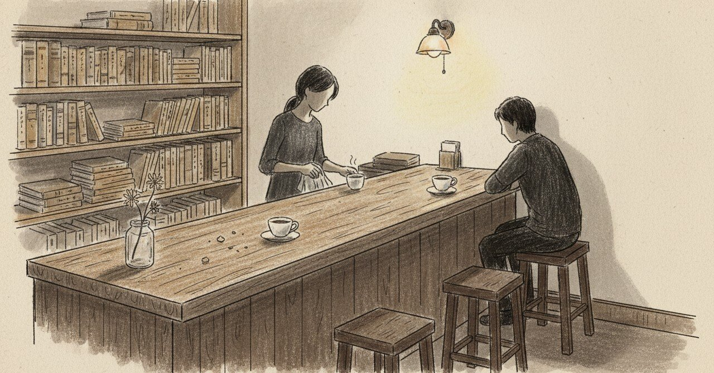

行きつけのKISSATENで、話を聞く側に立てるようになった日

この店に初めて行ったのは2025年2月だった。 半年以上通って、ようやく「行きつけ」と呼べる間柄になった頃、僕は「聞く側」に立てるようになっていた。
2025年10月28日の午後、筋トレに行く前に、行きつけのカフェに寄った。 店主と30分くらい喋った。
その日の日記に、こう書いている。
自分の人に対する見方をシェアしたり、自分の価値観を共有することで 自分の大切にしている自分に対して誠実であるとか 他者からの評価に対する視点を言語化することによって あー これがいいんだなーって改めて実感
あの日、自分は「話す側」にいた。 1年前の自分は、こうなれていなかった。
話を聞かれる客から、話を聞く客へ
2025年2月、初めてこの店に足を踏み入れた時、自分は黙って珈琲を飲むタイプの客だった。 店主はお客さんと話すのが好きな人で、会計のついでに少し世間話をしてくれるくらいの関係だった。
それが、8ヶ月経ついつの間にか、逆になっていた。
この日は、こちらから自分の価値観の話をしていた。 「他者からの評価を気にしなくて済むように、自分に対する誠実さを軸にする」みたいな話を、店主に聞いてもらっていた。
聞かれる客から、聞く客へ。聞く客から、話す客へ。 カフェとの関係は、自分の変化に伴って移り変わる。
店主からメールが来た夜
10月20日、店主からメールが来た。
行きつけのパン屋の店主が今なんか病んでしまってるって相談したい的なメール来てた 心配だけど。。 いつの間にか寄り添い力ついているみたいだけどどこでそうなったんやろ
相談を持ちかけられる側に立っている自分に、自分が驚いている。
いつからそうなったのか、自分でもわからない。 でも、たぶん、自分が誰かに寄り添ってもらった時間が、一つずつ降り積もっていた。
客同士が緩く繋がる場所
2026年1月、久しぶりにこのカフェに顔を出した日、客同士の関わり方について書いている。
行きつけのカフェとの出会いとか、どう感じてどう行動してどんな関係性だとか その店での客同士の関わり方とか
店には、店主と自分だけがいるわけじゃない。 常連同士が、誰かが来たら軽く挨拶して、知らない客がいても空気を崩さない。
場が育つと、場に来る人も育つ。 そういう時間の流れを、この店は持っていた。
仲間色の強い場所
2025年11月、僕はこう書いている。
カフェ店主も仲間だし。。 部下も部下ではあるけど仲間色が強い
行きつけのカフェ店主を、自分の中で「仲間」に分類していた。
利害もないし、毎日会うわけでもない。 ただ、行くと話す。帰り際に「また」と言う。
関係性の名前に、正式なものはない。 「仲間」という曖昧な言葉が、一番合っていた。
居場所という言葉の重み
2025年12月、自分はこう書いている。
カフェ店主の自分のお店が自分の居場所に戻りますように
この時期、店主の側にも揺れる何かがあったのだと思う。 僕は具体を聞かずに、ただ祈るように書いていた。
自分の店が自分の居場所に戻る、という願い方。
お店はもともと店主のもののはずなのに、「戻る」と書いた。 店主にとっての、あそこが居場所じゃなくなる時間があったのかもしれない。
聞く側に立てるようになったのは、自分の中で何かが溜まったからだ。 カフェに通い続けた時間も、その溜まり方に含まれている。
感情や関係の「溜まり方」を拾うLINE Bot「もやログ」を作っています。